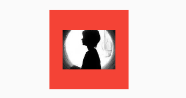

5.7 剪裁（Clip）¶
Flutter中提供了一些剪裁函数，用于对组件进行剪裁。
| 剪裁Widget | 作用 | | ———- | ——————————————————– | | ClipOval | 子组件为正方形时剪裁为内贴圆形，为矩形时，剪裁为内贴椭圆 | | ClipRRect | 将子组件剪裁为圆角矩形 | | ClipRect | 剪裁子组件到实际占用的矩形大小（溢出部分剪裁） |
下面看一个例子：
import 'package:flutter/material.dart';
class ClipTestRoute extends StatelessWidget {
@override
Widget build(BuildContext context) {
// 头像
Widget avatar = Image.asset("imgs/avatar.png", width: 60.0);
return Center(
child: Column(
children: <Widget>[
avatar, //不剪裁
ClipOval(child: avatar), //剪裁为圆形
ClipRRect( //剪裁为圆角矩形
borderRadius: BorderRadius.circular(5.0),
child: avatar,
),
Row(
mainAxisAlignment: MainAxisAlignment.center,
children: <Widget>[
Align(
alignment: Alignment.topLeft,
widthFactor: .5,//宽度设为原来宽度一半，另一半会溢出
child: avatar,
),
Text("你好世界", style: TextStyle(color: Colors.green),)
],
),
Row(
mainAxisAlignment: MainAxisAlignment.center,
children: <Widget>[
ClipRect(//将溢出部分剪裁
child: Align(
alignment: Alignment.topLeft,
widthFactor: .5,//宽度设为原来宽度一半
child: avatar,
),
),
Text("你好世界",style: TextStyle(color: Colors.green))
],
),
],
),
);
}
}
运行效果如图5-24所示：

上面示例代码注释比较详细，在此不再赘述。但值得一提的是最后的两个Row！它们通过Align设置widthFactor为0.5后，图片的实际宽度等于60×0.5，即原宽度一半，但此时图片溢出部分依然会显示，所以第一个“你好世界”会和图片的另一部分重合，为了剪裁掉溢出部分，我们在第二个Row中通过ClipRect将溢出部分剪裁掉了。
CustomClipper¶
如果我们想剪裁子组件的特定区域，比如，在上面示例的图片中，如果我们只想截取图片中部40×30像素的范围应该怎么做？这时我们可以使用CustomClipper来自定义剪裁区域，实现代码如下：
首先，自定义一个CustomClipper：
class MyClipper extends CustomClipper<Rect> {
@override
Rect getClip(Size size) => Rect.fromLTWH(10.0, 15.0, 40.0, 30.0);
@override
bool shouldReclip(CustomClipper<Rect> oldClipper) => false;
}
getClip()是用于获取剪裁区域的接口，由于图片大小是60×60，我们返回剪裁区域为Rect.fromLTWH(10.0, 15.0, 40.0, 30.0)，即图片中部40×30像素的范围。shouldReclip()接口决定是否重新剪裁。如果在应用中，剪裁区域始终不会发生变化时应该返回false，这样就不会触发重新剪裁，避免不必要的性能开销。如果剪裁区域会发生变化（比如在对剪裁区域执行一个动画），那么变化后应该返回true来重新执行剪裁。
然后，我们通过ClipRect来执行剪裁，为了看清图片实际所占用的位置，我们设置一个红色背景：
DecoratedBox(
decoration: BoxDecoration(
color: Colors.red
),
child: ClipRect(
clipper: MyClipper(), //使用自定义的clipper
child: avatar
),
)
运行效果如图5-25所示：

可以看到我们的剪裁成功了，但是图片所占用的空间大小仍然是60×60（红色区域），这是因为剪裁是在layout完成后的绘制阶段进行的，所以不会影响组件的大小，这和Transform原理是相似的。